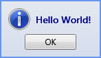

WPF Messagebox
Introduction
If you ever used the standard .NET messagebox I'm sure, like me, you found it to be a lacking and cumbersome. My main goal in writing this was simplifying the messagebox'es use, and adding some needed functionality (in my opinion) while keeping it's original API to allow smooth transition from the standard messagebox.
I came about to write this messagebox after twice having to write it in two seperate projects I was a part of. After having to write the same code for the second time, I thought I would upload it so developers (including myself) won't have to fuss with the WPF messagebox again.
Building the Sample
This sample is written in .Net 4.0, just build and run it.
I wrote it in .Net 4 so I would be able to use default parameter values, to save me writing all the different overloads I needed. It could work with .Net 3.5 if all of these were converted to normal overloads.
Description
As I stated in the introduction, in this project, I wanted to both simplify the use of the messagebox and add functionality. To simplify the use of the messagebox, I added multiple Show methods, There are different Show methods for each type of common use. These new Show methods do not allow to customize the messagebox like the old show methods, but are intended to be used as presets. The different methods are:
- ShowInformation

- ShowQuestion

- ShowWarning

- ShowError

And of course the old Show method.
While the new Show methods can't be customized like the old show methods, they do have some options other than the message. They allow the addition of a cancel button, and a details section, which takes me to my next point.
My other goal in writing this was to add some functionality I thought is missing. The first and most obvious change is that i deleted the title. My experience taught me that a messagebox title is redundant, so I decided to just drop it.
Another significant change is the addition of a details section. This is a section that's added when the details parameter recieves a value. It's main purpose is to allow copying information from the message, which leads me to my last point.
The ShowError message is unique among the others in that it can recieve an exception, and parse it to the messagebox. when an exception is passed to the messagebox, the exception's message would be placed in the message text, while the entire exception's ToString would pass to the details section (only if the project was build in debug). so all you need to do is this:
try
{
throw new Exception("FUUUUUUUUUUUU!!!!!!!");
}
catch (Exception ex)
{
MessageBox.ShowError(ex);
}
try { throw new Exception("FUUUUUUUUUUUU!!!!!!!"); } catch (Exception ex) { MessageBox.ShowError(ex); }
Credits
I can't take all the credits for this project, first of all, the different Show methods were the idea of my team leader, so I'd like to thank him.
Second, I borrowed an idea from this StackOverflow thread: http://stackoverflow.com/questions/1127647/convert-system-drawing-icon-to-system-media-imagesource